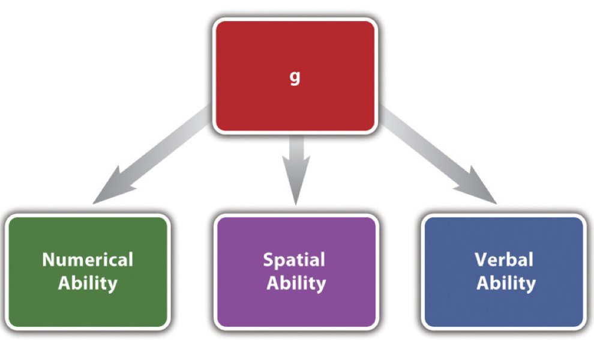

6 Theory in Psychology
It doesn’t matter how beautiful your theory is, it doesn’t matter how smart you are. If it doesn’t agree with experiment, it’s wrong. —Richard P. Feynman
In the following paragraph, researchers Sherlock Campbell and James Pennebaker describe a remarkable statistical relationship.
Multiple laboratories have demonstrated that people who are asked to write about traumatic experiences subsequently exhibit better physical health than people who are asked to write about superficial topics. In these studies, individuals are randomly assigned to write about either emotional or non-emotional topics for 15 to 20 min per day for 3 to 5 consecutive days. In the past 15 years, dozens of replications have demonstrated that emotional writing can influence frequency of physician visits, immune function, stress hormones, blood pressure, and a host of social, academic, and cognitive variables. These effects hold up across cultures, ages, and diverse samples (Campbell and Pennebaker 2003).
In other words, researchers have answered the interesting and important question of whether engaging in what has come to be called “expressive writing” improves people’s health. It does. But there is a second question that is equally interesting and important: Why? What psychological and biological variables, structures, and processes are involved, and how do they connect the act of expressive writing to improved health? Several ideas have been proposed. For example, people who write about traumatic experiences might habituate to them. That is, the more they think about them, the less negatively they react both psychologically and physiologically—leading to improvements in mental and physical health (Lepore et al. 2002).
This example illustrates that, like all scientists, researchers in psychology distinguish between two sorts of knowledge: their systematic observations and their explanations or interpretations of those observations. Typically, the former are called phenomena and the latter are called theories. Up to this point in the book, we have focused on phenomena. In this chapter, however, we focus on the equally important role of theories. We begin by exploring the distinction between phenomena and theories in more detail. We then look at the wide variety of theories that researchers in psychology construct. Finally, we consider how researchers use theories, and we present some strategies for incorporating theory into your own research.
Phenomena and Theories
Learning Objectives
- Define the terms phenomenon and theory and distinguish clearly between them.
- Explain the purposes of scientific theories.
- Explain why there are usually many plausible theories for set of phenomena.
Phenomena
A phenomenon (plural, phenomena) is a general result that has been observed reliably in systematic empirical research. In essence, it is an established answer to a research question. Some phenomena we have encountered in this book are that expressive writing improves health, women do not talk more than men, and cell phone usage impairs driving ability. Some others are that dissociative identity disorder (formerly called multiple personality disorder) increased greatly in prevalence during the late 20th century, people perform better on easy tasks when they are being watched by others (and worse on difficult tasks), and people recall items presented at the beginning and end of a list better than items presented in the middle.
Some Famous Psychological Phenomena
Phenomena are often given names by their discoverers or other researchers, and these names can catch on and become widely known. The following list is a small sample of famous phenomena in psychology.
Blindsight. People with damage to their visual cortex are often able to respond to visual stimuli that they do not consciously see.
Bystander effect. The more people who are present at an emergency situation, the less likely it is that any one of them will help.
Fundamental attribution error. People tend to explain others’ behavior in terms of their personal characteristics as opposed to the situation they are in.
McGurk effect. When audio of a basic speech sound is combined with video of a person making mouth movements for a different speech sound, people often perceive a sound that is intermediate between the two. For a demonstration, see http://www.faculty.ucr.edu/~rosenblu/ VSMcGurk.html
Other-race effect. People recognize faces of people of their own race more accurately than faces of people of other races.
Placebo effect. Placebos (fake psychological or medical treatments) often lead to improvements in people’s symptoms and functioning.
Mere exposure effect. The more often people have been exposed to a stimulus, the more they like it—even when the stimulus is presented subliminally.
Serial position effect. Stimuli presented near the beginning and end of a list are remembered better than stimuli presented in the middle. For a demonstration, see http://cat.xula.edu/thinker/memory/working/serial
Spontaneous recovery. A conditioned response that has been extinguished often returns with no further training after the passage of time.
Replicability
Although an empirical result might be referred to as a phenomenon after being observed only once, this term is more likely to be used for results that have been replicated. Replication means conducting a study again—either exactly as it was originally conducted or with modifications—to be sure that it produces the same results. Individual researchers usually replicate their own studies before publishing them. Many empirical research reports include an initial study and then one or more follow-up studies that replicate the initial study with minor modifications. Particularly interesting results come to the attention of other researchers who conduct their own replications. The positive effect of expressive writing on health and the negative effect of cell phone usage on driving ability are examples of phenomena that have been replicated many times by many different researchers.
Sometimes a replication of a study produces results that differ from the results of the initial study. This difference could mean that the results of the initial study or the results of the replication were a fluke—they occurred by chance and do not reflect something that is generally true. In either case, additional replications would be likely to resolve this discrepancy. A failure to produce the same results could also mean that the replication differed in some important way from the initial study. For example, early studies showed that people performed a variety of tasks better and faster when they were watched by others than when they were alone. Some later replications, however, showed that people performed worse when they were watched by others. Eventually researcher Robert Zajonc identified a key difference between the two types of studies. People seemed to perform better when being watched on highly practiced tasks but worse when being watched on relatively unpracticed tasks (Robert Boleslaw Zajonc et al. 1965). These two phenomena have now come to be called social facilitation and social inhibition.
Physics has the laws of motions and chemistry has the law of conservation of mass. Unlike in other sciences, psychology does not have laws but rather effects. Laws imply that the phenomenon is universally true and rarely in psychology can you not find an exception. Even the effects that have been established are often culturally dependent. For example, the fundamental attribution error is committed more frequently in North America than in East Asia (Miyamoto and Kitayama 2002).
Theories
What Is a Theory? A theory is a coherent explanation or interpretation of one or more phenomena. Although theories can take a variety of forms, one thing they have in common is that they go beyond the phenomena they explain by including variables, structures, processes, functions, or organizing principles that have not been observed directly. Consider, for example, Zajonc’s theory of social facilitation and social inhibition. He proposed that being watched by others while performing a task creates a general state of physiological arousal, which increases the likelihood of the dominant (most likely) response. So for highly practiced tasks, being watched increases the tendency to make correct responses, but for relatively unpracticed tasks, being watched increases the tendency to make incorrect responses. Notice that this theory—which has come to be called drive theory—provides an explanation of both social facilitation and social inhibition that goes beyond the phenomena themselves by including concepts such as “arousal” and “dominant response,” along with processes such as the effect of arousal on the dominant response.
Outside of science, referring to an idea as a theory often implies that it is untested—perhaps no more than a wild guess. In science, however, the term theory has no such implication. A theory is simply an explanation or interpretation of a set of phenomena. It can be untested, but it can also be extensively tested, well supported, and accepted as an accurate description of the world by the scientific community. The theory of evolution by natural selection, for example, is a theory because it is an explanation of the diversity of life on earth—not because it is untested or unsupported by scientific research. On the contrary, the evidence for this theory is overwhelmingly positive and nearly all scientists accept its basic assumptions as accurate. Similarly, the “germ theory” of disease is a theory because it is an explanation of the origin of various diseases, not because there is any doubt that many diseases are caused by microorganisms that infect the body.
In addition to theory, researchers in psychology use several related terms to refer to their explanations and interpretations of phenomena. A perspective is a broad approach—more general than a theory—to explaining and interpreting phenomena. For example, researchers who take a biological perspective tend to explain phenomena in terms of genetics or nervous and endocrine system structures and processes, while researchers who take a behavioral perspective tend to explain phenomena in terms of reinforcement, punishment, and other external events. A model is a precise explanation or interpretation of a specific phenomenon—often expressed in terms of equations, computer programs, or biological structures and processes. A hypothesis can be an explanation that relies on just a few key concepts—although this term more commonly refers to a prediction about a new phenomenon based on a theory (see Section “Using Theories in Psychological Research”). A theoretical framework can be as broad as a perspective or a specific as a model, but it is the context applied to understanding a phenomenon. Adding to the confusion is the fact that researchers often use these terms interchangeably. It would not be considered wrong to refer to the drive theory as the drive model or even the drive hypothesis. And the biopsychosocial model of health psychology—the general idea that health is determined by an interaction of biological, psychological, and social factors—is really more like a perspective as defined here. Keep in mind, however, that the most important distinction remains that between observations and interpretations.
What Are Theories For?
Of course, scientific theories are meant to provide accurate explanations or interpretations of phenomena. But there must be more to it than this explanation. Consider that a theory can be accurate without being very useful. To say that expressive writing helps people “deal with their emotions” might be accurate as far as it goes, but it seems too vague to be of much use. Consider also that a theory can be useful without being entirely accurate. Figure Figure 1 is a representation of the classic multistore model of human memory, which is still cited by researchers and discussed in textbooks despite the fact that it is now known to be inaccurate in a number of ways (Izawa 1999). These two examples suggest that theories have purposes other than simply providing accurate explanations or interpretations. Here we look at three additional purposes of theories: the organization of known phenomena, the prediction of outcomes in new situations, and the generation of new research.
In the multistore model of human memory, information from the environment passes through a sensory store on its way to a short-term store, where it can be rehearsed, and then to a long-term store, where it can be stored and retrieved much later. This theory has been extremely successful at organizing old phenomena and predicting new ones.
Organization
One important purpose of scientific theories is to organize phenomena in ways that help people think about them clearly and efficiently. The drive theory of social facilitation and social inhibition, for example, helps to organize and make sense of a large number of seemingly contradictory results. The multistore model of human memory efficiently summarizes many important phenomena: the limited capacity and short retention time of information that is attended to but not rehearsed, the importance of rehearsing information for long-term retention, the serial-position effect, and so on. Or consider a classic theory of intelligence represented by Figure Figure 2. According to this theory, intelligence consists of a general mental ability, g, plus a small number of more specific abilities that are influenced by g (Neisser et al. 1996). Although there are other theories of intelligence, this one does a good job of summarizing a large number of statistical relationships between tests of various mental abilities. This theory includes the fact that tests of all basic mental abilities tend to be somewhat positively correlated and the fact that certain subsets of mental abilities (e.g., reading comprehension and analogy completion) are more positively correlated than others (e.g., reading comprehension and arithmetic).

Thus theories are good or useful to the extent that they organize more phenomena with greater clarity and efficiency. Scientists generally follow the principle of parsimony, also known as Occam’s razor, which holds that a theory should include only as many concepts as are necessary to explain or interpret the phenomena of interest. Simpler, more parsimonious theories organize phenomena more efficiently than more complex, less parsimonious theories.
Prediction
A second purpose of theories is to allow researchers and others to make predictions about what will happen in new situations. For example, a gymnastics coach might wonder whether a student’s performance is likely to be better or worse during a competition than when practicing alone. Even if this particular question has never been studied empirically, Zajonc’s drive theory suggests an answer. If the student generally performs with no mistakes, she is likely to perform better during competition. If she generally performs with many mistakes, she is likely to perform worse.
In clinical psychology, treatment decisions are often guided by theories. Consider, for example, dissociative identity disorder (formerly called multiple personality disorder). The prevailing scientific theory of dissociative identity disorder is that people develop multiple personalities (also called alters) because they are familiar with this idea from popular portrayals (e.g., the movie Sybil) and because they are unintentionally encouraged to do so by their clinicians (e.g., by asking to “meet” an alter). This theory implies that rather than encouraging patients to act out multiple personalities, treatment should involve discouraging them from doing this role playing (Lilienfeld et al. 2011).
Generation of New Research
A third purpose of theories is to generate new research by raising new questions. Consider, for example, the theory that people engage in self-injurious behavior such as cutting because it reduces negative emotions such as sadness, anxiety, and anger. This theory immediately suggests several new and interesting questions. Is there, in fact, a statistical relationship between cutting and the amount of negative emotions experienced? Is it causal? If so, what is it about cutting that has this effect? Is it the pain, the sight of the injury, or something else? Does cutting affect all negative emotions equally?
Notice that a theory does not have to be accurate to serve this purpose. Even an inaccurate theory can generate new and interesting research questions. Of course, if the theory is inaccurate, the answers to the new questions will tend to be inconsistent with the theory. This new direction will lead researchers to reevaluate the theory and either revise it or abandon it for a new one. And this cycle of revising is how scientific theories become more detailed and accurate over time.
Multiple Theories
At any point in time, researchers are usually considering multiple theories for any set of phenomena. One reason is that because human behavior is extremely complex, it is always possible to look at it from different perspectives. For example, a biological theory of sexual orientation might focus on the role of sex hormones during critical periods of brain development, while a sociocultural theory might focus on cultural factors that influence how underlying biological tendencies are expressed. A second reason is that—even from the same perspective—there are usually different ways to “go beyond” the phenomena of interest. For example, in addition to the drive theory of social facilitation and social inhibition, there is another theory that explains them in terms of a construct called “evaluation apprehension”—anxiety about being evaluated by the audience. Both theories go beyond the phenomena to be interpreted, but they do so by proposing somewhat different underlying processes.
Different theories of the same set of phenomena can be complementary—with each one supplying one piece of a larger puzzle. A biological theory of sexual orientation and a sociocultural theory of sexual orientation might accurately describe different aspects of the same complex phenomenon. Similarly, social facilitation could be the result of both general physiological arousal and evaluation apprehension. But different theories of the same phenomena can also be competing in the sense that if one is accurate, the other is probably not. For example, an alternative theory of dissociative identity disorder—the posttraumatic theory—holds that alters are created unconsciously by the patient as a means of coping with sexual abuse or some other traumatic experience. Because the sociocognitive theory and the posttraumatic theories attribute dissociative identity disorder to fundamentally different processes, it seems unlikely that both can be accurate. See Note 4.10 “Where Do Multiple Personalities Come From?” for more on these competing theories.
Where Do Multiple Personalities Come From?
The literature on dissociative identity disorder (DID) features two competing theories. The sociocognitive theory is that DID comes about because patients are aware of the disorder, know its characteristic features, and are encouraged to take on multiple personalities by their therapists. The posttraumatic theory is that multiple personalities develop as a way of coping with sexual abuse or some other trauma. There are now several lines of evidence that support the sociocognitive model over the posttraumatic model (Lilienfeld et al. 2011).
- Diagnosis of DID greatly increased after the release of the book and film Sybil—about a woman with DID—in the 1970s. DID is extremely rare outside of North America.
- A very small percentage of therapists are responsible for diagnosing the vast majority of cases of DID.
- The literature on treating DID include many practices that encourage patients to act out multiple personalities (e.g., having a bulletin board on which personalities can leave messages for each other).
- Normal people can easily re-create the symptoms of DID with minimal suggestion in simulated clinical interviews.
The fact that there are multiple theories for any set of phenomena does not mean that any theory is as good as any other or that it is impossible to know whether a theory provides an accurate explanation or interpretation. On the contrary, scientists are continually comparing theories in terms of their ability to organize phenomena, predict outcomes in new situations, and generate research. Those that fare poorly are assumed to be less accurate and are abandoned, while those that fare well are assumed to be more accurate and are retained and compared with newer—and hopefully better—theories. Although scientists generally do not believe that their theories ever provide perfectly accurate descriptions of the world, they do assume that this process produces theories that come closer and closer to that ideal.
Key Takeaways
Scientists distinguish between phenomena, which are their systematic observations, and theories, which are their explanations or interpretations of phenomena.
In addition to providing accurate explanations or interpretations, scientific theories have three basic purposes. They organize phenomena, allow people to predict what will happen in new situations, and help generate new research.
Researchers generally consider multiple theories for any set of phenomena. Different theories of the same set of phenomena can be complementary or competing.
Exercises
Practice: Think of at least three different theories to explain the fact that married people tend to report greater levels of happiness than unmarried people.
Practice: Find a recent article in a professional journal and do two things: a. Identify the primary phenomenon of interest. b. Identify the theory or theories used to explain or interpret that phenomenon.
Discussion: Can a theory be useful even if it is inaccurate? How?
The Variety of Theories in Psychology
Learning Objectives
- Describe three dimensions along which theories in psychology vary.
- Give examples of several different types of theories in psychology.
Researchers in psychology have found that many different types of theories can help them to organize phenomena, predict what will happen in new situations, and generate new research. It is important for beginning researchers to be aware of the different types so that they recognize theories when they see them in the research literature. (They are not always clearly labeled as “theories.”) It is also important for them to see that some types of theories are well within their ability to understand, use, and even construct. In this section, we look at the variety of psychological theories in terms of three important dimensions: formality, scope, and theoretical approach.
Formality
Psychological theories vary widely in their formality—the extent to which the components of the theory and the relationships among them are specified clearly and in detail. At the informal end of this dimension are theories that consist of simple verbal descriptions of a few important components and relationships. The habituation theory of expressive-writing effects on health is relatively informal in this sense. So is the drive theory of social facilitation and inhibition. At the more precise, formal end of this dimension are theories that are expressed in terms of mathematical equations or computer programs.
Some Formal Theories in Psychology
People who are not familiar with scientific psychology are sometimes surprised to learn that psychological theories can take the form of mathematical equations and computer programs. The following formal theories are among the best known and most successful in the field.
ACT-R. A comprehensive theory of human cognition that is akin to a programming language, within which more specific models can be created. See http://act-r.psy.cmu.edu
Prospect theory. A formal theory of decision making under uncertainty. Psychologist Daniel Kahneman won the Nobel Prize in economics based in part on prospect theory, which he developed with Amos Tversky. Read about Kahneman’s Nobel Prize work at http://www.nobelprize.org/nobel_prizes/economics/laureates/2002/kahneman-autobio.html
Rescorla-Wagner model. A theory of classical conditioning that features an equation describing how the strength of the association between unconditioned and conditioned stimuli changes when the two are paired. For more on this formal theory—including an interactive version—see http://psych.hanover.edu/javatest/rescrolawagner
Both informal and formal theories have their place in psychological research. Informal theories tend to be easier to create and to understand but less precise in their predictions, which can make them more difficult to test. They are especially appropriate, however, in the early stages of research when the phenomena of interest have not yet been described in detail. Formal theories tend to be more difficult to create and to understand—sometimes requiring a certain amount of mathematical or computer programming background—but they also tend to be more precise in their predictions and therefore easier to test. They are especially appropriate in the later stages of research when the phenomena of interest have been described in detail.
Scope
Theories in psychology also vary widely in their scope—the number and diversity of the phenomena they explain or interpret. Many early psychological theories were extremely broad in that they attempted to interpret essentially all human behavior. Freud and his followers, for example, applied his theory not only to understanding psychological disorders but also to slips of the tongue and other everyday errors, dreaming, sexuality, art, politics, and even civilization itself (Fine 1979).
Such theories have fallen out of favor in scientific psychology, however, because they tend to be imprecise and difficult to test. In addition, they have not been particularly successful at organizing or predicting the range and complexity of human behavior at the level of detail that scientific researchers usually seek. These large theories that attempt to explain everything often end up being vague and can seldom make specific predictions.
Still, contemporary theories in psychology can vary in their scope. At the broad end of this dimension are theories that apply to many diverse phenomena. For example, cognitive dissonance theory proposed by Leon Festinger in 1959 assumes that when people hold inconsistent beliefs, this duality creates mental discomfort that they are motivated to reduce by changing one or both of the beliefs. This theory has been applied to a wide variety of phenomena, including the persistence of irrational beliefs and behaviors (e.g., smoking), the effectiveness of certain persuasion and sales techniques (e.g., asking for a small favor before asking for a big one), and even placebo effects. At the narrow end of this dimension are theories that apply to a small number of closely related phenomena. Consider, for example, a very specific quantitative ability called subitizing. This refers to people’s ability to quickly and accurately perceive the number of objects in a scene without counting them—as long as the number is four or fewer. Several theories have been proposed to explain subitizing. Among them is the idea that small numbers of objects are associated with easily recognizable patterns. For example, people know immediately that there are three objects in a scene because the three objects tend to form a “triangle” and it is this pattern that is quickly perceived (Logan and Zbrodoff 2003).
As with informal and formal theories, both broad and narrow theories have their place in psychological research. Broad theories organize more phenomena but tend to be less formal and less precise in their predictions. Narrow theories organize fewer phenomena but tend to be more formal and more precise in their predictions.
Theoretical Approach
In addition to varying in formality and scope, theories in psychology vary widely in the kinds of theoretical ideas they are constructed from. We will refer to this fundamental aspect as their theoretical approach.
Functional theories explain psychological phenomena in terms of their function or purpose. For example, one prominent theory of repeated self-injury (e.g., cutting) is that people do it because it produces a short-term reduction in the intensity of negative emotions that they are feeling (Huband and Tantam 2009). Note that this theory does not focus on how this reduction happens, but on the function of self-injury for the people who engage in it. Theories from the perspective of evolutionary psychology also tend to be functional—assuming that human behavior has evolved to solve specific adaptive problems faced by our distant ancestors. Consider the phenomenon of sex differences in human mating strategies (Buss and Schmitt 1993).
Men are somewhat more likely than women to seek short-term partners and to value physical attractiveness over material resources in a mate. Women are somewhat more likely than men to seek long-term partners and to value material resources over physical attractiveness in a mate. But why? The standard evolutionary theory holds that because the male investment in becoming a parent is relatively small, men reproduce more successfully by seeking several short-term partners who are young and healthy (which is signaled by physical attractiveness). But because the female investment in becoming a parent is quite large, women reproduce more successfully by seeking a long-term partner who has resources to contribute to raising the child.
Mechanistic theories, on the other hand, focus on specific variables, structures, and processes, and how they interact to produce the phenomena. These types of theories involve identifying a mechanism or explanation for the phenomenon and providing context for when or how intense the phenomenon happens. The drive theory of social facilitation and inhibition and the multistore model of human memory are mechanistic theories in this sense. Figure Figure 3 represents another example—a contemporary cognitive theory of hypochondriasis—an extreme form of health anxiety in which people misinterpret ordinary bodily symptoms (e.g., headaches) as signs of a serious illness (e.g., a brain tumor; Williams, (2004)). This theory specifies several key variables and the relationships among them. Specifically, people who are high in the personality trait of neuroticism (also called negative emotionality) start to pay excessive attention to negative health information—especially if they have had a significant illness experience as a child (e.g., a seriously ill parent). This attention to negative health information then leads to health anxiety and hypochondriasis, especially among people who are low in effortful control, which is the ability to shift attention away from negative thoughts and feelings.
Mechanistic theories can also be expressed in terms of biological structures and processes. With advances in genetics and neuroscience, such theories are becoming increasingly common in psychology and research is often criticized when it is does not contain a mechanism. For example, researchers are currently constructing and testing theories that specify the brain structures associated with the storage and rehearsal of information in the short-term store, the transfer of information to the long-term store, and so on. Theories of psychological disorders are also increasingly likely to focus on biological mechanisms. Schizophrenia, for example, has been explained in terms of several biological theories, including theories that focus on genetics, neurotransmitters, brain structures, and even prenatal exposure to infections. If functional theories provide the “why”, then mechanistic theories provide the “how”.
Finally, there are also theoretical approaches that provide organization without necessarily providing a functional or mechanistic explanation. These include stage theories, which specify a series of stages that people pass through as they develop or adapt to their environment. Famous stage theories include Abraham Maslow’s hierarchy of needs and Jean Piaget’s theory of cognitive development. A distinguishing factor of stage theories is that as people pass through the stages, they integrate their outcomes from previous stages to help them succeed in the next stage. In stage theories, progressing forward or stopping is the only option, because stage theories do not allow for reverting to previous stages.
Typologies provide organization by categorizing people or behavior into distinct types. These include theories that identify several basic emotions (e.g., happiness, sadness, fear, surprise, anger, and disgust), several distinct types of intelligence (e.g., spatial, linguistic, mathematical, kinesthetic, musical, interpersonal, and intrapersonal), and distinct types of personalities (e.g., Type A vs. Type B). Unlike stage theories, people do not progress through the typologies in any order or at all.
Researchers in psychology have found that there is a place for all these theoretical approaches. In fact, multiple approaches are probably necessary to provide a complete understanding of any set of phenomena. A complete understanding of emotions, for example, is likely to require identifying the basic emotions that people experience, explaining why we have those emotions, and describing how those emotions work in terms of underlying psychological and biological variables, structures, and processes.
Key Takeaways
- Theories in psychology vary widely in terms of their formality, scope, and theoretical approach. The different types of theories all play important roles in psychological research.
Exercises
Practice: Find an empirical research report in a professional journal, identify a theory that the researchers present, and then describe the theory in terms of its formality (informal vs. formal), scope (broad vs. narrow), and theoretical approach (functional, mechanistic, etc.).
Discussion: Do you think there will ever be a single theory that explains all psychological disorders? Why or why not?
Using Theories in Psychological Research
Learning Objectives
- Explain how researchers in psychology test their theories, and give a concrete example.
- Explain how psychologists reevaluate theories in light of new results, including some of the complications involved.
- Describe several ways to incorporate theory into your own research.
We have now seen what theories are, what they are for, and the variety of forms that they take in psychological research. In this section we look more closely at how researchers actually use them. We begin with a general description of how researchers test and revise their theories, and we end with some practical advice for beginning researchers who want to incorporate theory into their research.
Theory Testing and Revision
The primary way that scientific researchers use theories is sometimes called the hypothetico- deductive method (although this term is much more likely to be used by philosophers of science than by scientists themselves). A researcher begins with a set of phenomena and either constructs a theory to explain or interpret them or chooses an existing theory to work with. He or she then makes a prediction about some new phenomenon that should be observed if the theory is correct. Again, this prediction is called a hypothesis. The researcher then conducts an empirical study to test the hypothesis. Finally, he or she reevaluates the theory in light of the new results and revises it if necessary. This process is usually conceptualized as a cycle because the researcher can then derive a new hypothesis from the revised theory, conduct a new empirical study to test the hypothesis, and so on. As Figure Figure 4 shows, this approach meshes nicely with the model of scientific research in psychology presented earlier in the textbook—creating a more detailed model of “theoretically motivated” or “theory-driven” research.
As an example, let us return to Zajonc’s research on social facilitation and inhibition. He started with a somewhat contradictory pattern of results from the research literature. He then constructed his drive theory, according to which being watched by others while performing a task causes physiological arousal, which increases an organism’s tendency to make the dominant response. This theory predicts social facilitation for well-learned tasks and social inhibition for poorly learned tasks. He now had a theory that organized previous results in a meaningful way—but he still needed to test it. He hypothesized that if his theory was correct, he should observe that the presence of others improves performance in a simple laboratory task but inhibits performance in a difficult version of the very same laboratory task. To test this hypothesis, one of the studies he conducted used cockroaches as subjects (Robert B. Zajonc, Heingartner, and Herman 1969). The cockroaches ran either down a straight runway (an easy task for a cockroach) or through a cross-shaped maze (a difficult task for a cockroach) to escape into a dark chamber when a light was shined on them.
They did this either while alone or in the presence of other cockroaches in clear plastic “audience boxes.” Zajonc found that cockroaches in the straight runway reached their goal more quickly in the presence of other cockroaches, but cockroaches in the cross-shaped maze reached their goal more slowly when they were in the presence of other cockroaches. Thus he confirmed his hypothesis and provided support for his drive theory. Zajonc also showed that drive theory existed in humans in many other studies afterwards (Robert B. Zajonc and Sales 1966).
Constructing or Choosing a Theory
Along with generating research questions, constructing theories is one of the more creative parts of scientific research. But as with all creative activities, success requires preparation and hard work more than anything else. To construct a good theory, a researcher must know in detail about the phenomena of interest and about any existing theories based on a thorough review of the literature. The new theory must provide a coherent explanation or interpretation of the phenomena of interest and have some advantage over existing theories. It could be more formal and therefore more precise, broader in scope, more parsimonious, or it could take a new perspective or theoretical approach. If there is no existing theory, then almost any theory can be a step in the right direction.
As we have seen, formality, scope, and theoretical approach are determined in part by the nature of the phenomena to be interpreted. But the researcher’s interests and abilities play a role too. For example, constructing a theory that specifies the neural structures and processes underlying a set of phenomena requires specialized knowledge and experience in neuroscience (which most professional researchers would acquire at university and then graduate school). But again, many theories in psychology are relatively informal, narrow in scope, and expressed in terms that even a beginning researcher can understand and even use to construct his or her own new theory.
It is probably more common, however, for a researcher to start with a theory that was originally constructed by someone else—giving due credit to the originator of the theory. This type of investigation is another example of how researchers work collectively to advance scientific knowledge. Once they have identified an existing theory, they might derive a hypothesis from the theory and test it or modify the theory to account for some new phenomenon and then test the modified theory.
Deriving Hypotheses
Again, a hypothesis is a prediction about a new phenomenon that should be observed if a particular theory is accurate. Theories and hypotheses always have this if-then relationship. “If drive theory is correct, then cockroaches should run through a straight runway faster, and a branching runway more slowly, when other cockroaches are present.” Although hypotheses are usually expressed as statements, they can always be rephrased as questions. “Do cockroaches run through a straight runway faster when other cockroaches are present?” Thus deriving hypotheses from theories is an excellent way of generating interesting research questions.
But how do researchers derive hypotheses from theories? One way is to generate a research question using the techniques discussed in Chapter 2 “Getting Started in Research” and then ask whether any theory implies an answer to that question. For example, you might wonder whether expressive writing about positive experiences improves health as much as expressive writing about traumatic experiences. Although this question is an interesting one on its own, you might then ask whether the habituation theory—the idea that expressive writing causes people to habituate to negative thoughts and feelings—implies an answer. In this case, it seems clear that if the habituation theory is correct, then expressive writing about positive experiences should not be effective because it would not cause people to habituate to negative thoughts and feelings. A second way to derive hypotheses from theories is to focus on some component of the theory that has not yet been directly observed. For example, a researcher could focus on the process of habituation—perhaps hypothesizing that people should show fewer signs of emotional distress with each new writing session.
Among the very best hypotheses are those that distinguish between competing theories. For example, Norbert Schwarz and his colleagues considered two theories of how people make judgments about themselves, such as how assertive they are (Schwarz and Strack 1991). Both theories held that such judgments are based on relevant examples that people bring to mind. However, one theory was that people base their judgments on the number of examples they bring to mind and the other was that people base their judgments on how easily they bring those examples to mind. To test these theories, the researchers asked people to recall either six times when they were assertive (which is easy for most people) or 12 times (which is difficult for most people). Then they asked them to judge their own assertiveness. Note that the number-of-examples theory implies that people who recalled 12 examples should judge themselves to be more assertive because they recalled more examples, but the ease-of-examples theory implies that participants who recalled six examples should judge themselves as more assertive because recalling the examples was easier. Thus the two theories made opposite predictions so that only one of the predictions could be confirmed. The surprising result was that participants who recalled fewer examples judged themselves to be more assertive—providing particularly convincing evidence in favor of the ease-of-retrieval theory over the number-of- examples theory.
Evaluating and Revising Theories
If a hypothesis is confirmed in a systematic empirical study, then the theory has been strengthened. Not only did the theory make an accurate prediction, but there is now a new phenomenon that the theory accounts for. If a hypothesis is disconfirmed in a systematic empirical study, then the theory has been weakened. It made an inaccurate prediction, and there is now a new phenomenon that it does not account for.
Although this revision seems straightforward, there are some complications. First, confirming a hypothesis can strengthen a theory but it can never prove a theory. In fact, scientists tend to avoid the word “prove” when talking and writing about theories. One reason for this avoidance is that there may be other plausible theories that imply the same hypothesis, which means that confirming the hypothesis strengthens all those theories equally. A second reason is that it is always possible that another test of the hypothesis or a test of a new hypothesis derived from the theory will be disconfirmed. This difficulty is a version of the famous philosophical “problem of induction.” One cannot definitively prove a general principle (e.g., “All swans are white.”) just by observing confirming cases (e.g., white swans)—no matter how many. It is always possible that a disconfirming case (e.g., a black swan) will eventually come along. For these reasons, scientists tend to think of theories—even highly successful ones—as subject to revision based on new and unexpected observations.
A second complication has to do with what it means when a hypothesis is disconfirmed. According to the strictest version of the hypothetico-deductive method, disconfirming a hypothesis disproves the theory it was derived from. In formal logic, the premises “if A then B” and “not B” necessarily lead to the conclusion “not A.” If A is the theory and B is the hypothesis (“if A then B”), then disconfirming the hypothesis (“not B”) must mean that the theory is incorrect (“not A”). In practice, however, scientists do not give up on their theories so easily. One reason is that one disconfirmed hypothesis could be a fluke or it could be the result of a faulty research design. Perhaps the researcher did not successfully manipulate the independent variable or measure the dependent variable. A disconfirmed hypothesis could also mean that some unstated but relatively minor assumption of the theory was not met. For example, if Zajonc had failed to find social facilitation in cockroaches, he could have concluded that drive theory is still correct but it applies only to animals with sufficiently complex nervous systems.
This practice does not mean that researchers are free to ignore disconfirmations of their theories. If they cannot improve their research designs or modify their theories to account for repeated disconfirmations, then they eventually abandon their theories and replace them with ones that are more successful.
Incorporating Theory Into Your Research
It should be clear from this chapter that theories are not just “icing on the cake” of scientific research; they are a basic ingredient. If you can understand and use them, you will be much more successful at reading and understanding the research literature, generating interesting research questions, and writing and conversing about research. Of course, your ability to understand and use theories will improve with practice. But there are several things that you can do to incorporate theory into your research right from the start.
The first thing is to distinguish the phenomena you are interested in from any theories of those phenomena. Beware especially of the tendency to “fuse” a phenomenon to a commonsense theory of it. For example, it might be tempting to describe the negative effect of cell phone usage on driving ability by saying, “Cell phone usage distracts people from driving.” Or it might be tempting to describe the positive effect of expressive writing on health by saying, “Dealing with your emotions through writing makes you healthier.” In both of these examples, however, a vague commonsense explanation (distraction, “dealing with” emotions) has been fused to the phenomenon itself. The problem is that this conflation gives the impression that the phenomenon has already been adequately explained and closes off further inquiry into precisely why or how it happens.
As another example, researcher Jerry Burger and his colleagues were interested in the phenomenon that people are more willing to comply with a simple request from someone with whom they are familiar rather than unfamiliar (Burger et al. 2001). A beginning researcher who is asked to explain why this phenomenon is the case might be at a complete loss or say something like, “Well, because they are familiar with them.” But digging just a bit deeper, Burger and his colleagues realized that there are several possible explanations. Among them are that complying with people we know creates positive feelings, that we anticipate needing something from them in the future, and that we like them more and follow an automatic rule that says to help people we like.
The next thing to do is turn to the research literature to identify existing theories of the phenomena you are interested in. Remember that there will usually be more than one plausible theory. Existing theories may be complementary or competing, but it is essential to know what they are. If there are no existing theories, you should come up with two or three of your own—even if they are informal and limited in scope. Then get in the habit of describing the phenomena you are interested in, followed by the two or three best theories of it. Do this process whether you are speaking or writing about your research. When asked what their research was about, for example, Burger and his colleagues could have said something like the following:
It’s about the fact that we’re more likely to comply with requests from people we know [the phenomenon]. This situation is interesting because it could be because it makes us feel good [Theory 1], because we think we might get something in return [Theory 2], or because we like them more and have an automatic tendency to comply with people we like [Theory 3].
At this point, you may be able to derive a hypothesis from one of the theories. At the very least, for each research question you generate, you should ask what each plausible theory implies about the answer to that question. If one of them implies a particular answer, then you may have an interesting hypothesis to test. Burger and colleagues, for example, asked what would happen if a request came from a stranger whom participants had sat next to only briefly, did not interact with, and had no expectation of interacting with in the future. They reasoned that if familiarity created liking, and liking increased people’s tendency to comply (Theory 3), then this situation should still result in increased rates of compliance (which it did). If the question is interesting but no theory implies an answer to it, this dearth might suggest that a new theory needs to be constructed or that existing theories need to be modified in some way. These would make excellent points of discussion in the introduction or discussion of an American Psychological Association (APA) style research report or research presentation.
When you do write your research report or plan your presentation, be aware that there are two basic ways that researchers usually include theory. The first is to raise a research question, answer that question by conducting a new study, and then offer one or more theories (usually more) to explain or interpret the results. This format works well for applied research questions and for research questions that existing theories do not address. The second way is to describe one or more existing theories, derive a hypothesis from one of those theories, test the hypothesis in a new study, and finally reevaluate the theory. This format works well when there is an existing theory that addresses the research question—especially if the resulting hypothesis is surprising or conflicts with a hypothesis derived from a different theory.
To use theories in your research will not only give you guidance in coming up with experiment ideas and possible projects, but it lends legitimacy to your work. Psychologists have been interested in a variety of human behaviors and have developed many theories along the way. Using established theories will help you break new ground as a researcher, not limit you from developing your own ideas.
Key Takeaways
Working with theories is not “icing on the cake.” It is a basic ingredient of psychological research.
Like other scientists, psychologists use the hypothetico-deductive method. They construct theories to explain or interpret phenomena (or work with existing theories), derive hypotheses from their theories, test the hypotheses, and then reevaluate the theories in light of the new results.
There are several things that even beginning researchers can do to incorporate theory into their research. These include clearly distinguishing phenomena from theories, knowing about existing theories, constructing one’s own simple theories, using theories to make predictions about the answers to research questions, and incorporating theories into one’s writing and speaking.
Exercises
- Practice: Find a recent empirical research report in a professional journal. Read the introduction and highlight in different colors descriptions of phenomena, theories, and hypotheses.
References
Burger, Jerry M., Shelley Soroka, Katrina Gonzago, Emily Murphy, and Emily Somervell. 2001. “The Effect of Fleeting Attraction on Compliance to Requests.” Personality and Social Psychology Bulletin 27 (12): 1578–86.
Buss, David M., and David P. Schmitt. 1993. “Sexual Strategies Theory: An Evolutionary Perspective on Human Mating.” Psychological Review 100 (2): 204.
Campbell, R. Sherlock, and James W. Pennebaker. 2003. “The Secret Life of Pronouns: Flexibility in Writing Style and Physical Health.” Psychological Science 14 (1): 60–65.
Fine, Reuben. 1979. A History of Psychoanalysis. Columbia University Press.
Huband, Nick, and Digby Tantam. 2009. Understanding Repeated Self-Injury: A Multidisciplinary Approach. Palgrave Macmillan.
Izawa, Chizuko. 1999. On Human Memory: Evolution, Progress, and Reflections on the 30th Anniversary of the Atkinson-Shiffrin Model. Psychology Press.
Lepore, Stephen J., Melanie A. Greenberg, Michelle Bruno, and Joshua M. Smyth. 2002. “Expressive Writing and Health: Self-Regulation of Emotion-Related Experience, Physiology, and Behavior.”
Lilienfeld, Scott O., Steven Jay Lynn, John Ruscio, and Barry L. Beyerstein. 2011. 50 Great Myths of Popular Psychology: Shattering Widespread Misconceptions about Human Behavior. John Wiley & Sons.
Logan, Gordon D., and N. Jane Zbrodoff. 2003. “Subitizing and Similarity: Toward a Pattern-Matching Theory of Enumeration.” Psychonomic Bulletin & Review 10 (3): 676–82.
Miyamoto, Yuri, and Shinobu Kitayama. 2002. “Cultural Variation in Correspondence Bias: The Critical Role of Attitude Diagnosticity of Socially Constrained Behavior.” Journal of Personality and Social Psychology 83 (5): 1239.
Neisser, Ulric, Gwyneth Boodoo, Thomas J. Bouchard Jr, A. Wade Boykin, Nathan Brody, Stephen J. Ceci, Diane F. Halpern, et al. 1996. “Intelligence: Knowns and Unknowns.” American Psychologist 51 (2): 77.
Schwarz, Norbert, and Fritz Strack. 1991. “Context Effects in Attitude Surveys: Applying Cognitive Theory to Social Research.” European Review of Social Psychology 2 (1): 31–50.
Williams, Paula G. 2004. “The Psychopathology of Self-Assessed Health: A Cognitive Approach to Health Anxiety and Hypochondriasis.” Cognitive Therapy and Research 28 (5): 629–44.